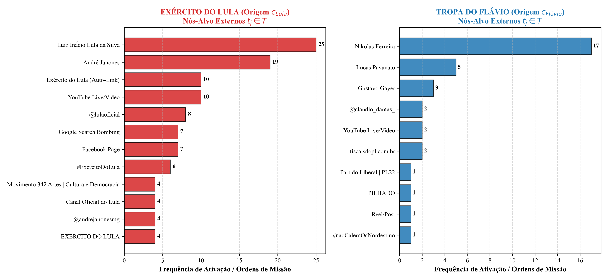
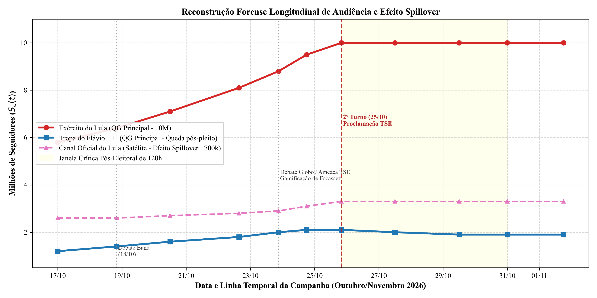
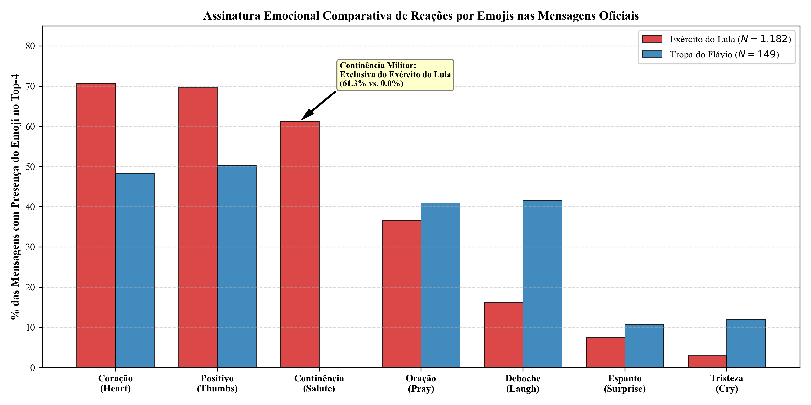

Abstract
Historically, computational social science and network analysis studies on WhatsApp during Brazilian elections (2018–2022) focused on small conversational groups (limited to 256 or 1,024 members) characterized by horizontal message-forwarding cascades. In the 2026 Brazilian Presidential Election, a new architectural paradigm emerged: WhatsApp Channels operating as massive one-to-many broadcast hubs reaching up to 10 million followers. This paper presents the first structural and comparative characterization of the two official mobilization channels registered with the Superior Electoral Court (TSE) during the 2026 presidential runoff: “Exército do Lula” (10M followers) and “Tropa do Flávio” (2.0M followers). First, we formalize a directed weighted bipartite graph \(G = (C, T, E, w)\) connecting WhatsApp command channels to external targets across Instagram, X, YouTube, and web platforms. Second, we introduce a novel forensic methodology based on Frozen OpenGraph Link Previews embedded within chat messages, allowing researchers to reconstruct historical follower growth curves and measure cross-channel audience spillover without privileged API access. Third, we establish an empirical framework to track collective emotional profiles via emoji reaction vectors. We document the methodology, data pipeline, and formal modeling, establishing a rigorous foundation for the post-election longitudinal dataset (\(N=1,331\) messages across the 14-day observation window through October 30, 2026).
Resumo
Historicamente, os estudos sobre o WhatsApp em eleições brasileiras (2018–2022) no âmbito do BRASNAM concentraram-se em grupos de conversação (limitados a 256 ou 1.024 membros), caracterizados por cascatas horizontais de encaminhamento. Nas Eleições Presidenciais de 2026, emergiu um novo paradigma arquitetural: os Canais do WhatsApp (WhatsApp Channels), operando como centros de comando e controle (Command & Control — C2) unidirecionais na escala de até 10 milhões de seguidores. Este artigo apresenta a primeira caracterização estrutural e comparativa dos dois canais oficiais de mobilização registrados perante o Tribunal Superior Eleitoral (TSE) no 2º turno de 2026: “Exército do Lula” (10M seguidores) e “Tropa do Flávio” (2,0M seguidores). Primeiro, formalizamos um grafo bipartido direcionado e ponderado \(G = (C, T, E, w)\) conectando os canais de comando aos alvos externos de engajamento no Instagram, X, YouTube e plataformas eleitorais. Segundo, propomos uma metodologia forense inédita baseada em Cartões OpenGraph Congelados (Frozen Link Previews) nas mensagens, permitindo reconstruir retroativamente a curva temporal de seguidores e medir a transferência de audiência (spillover) entre canais sem necessidade de APIs restritas. Terceiro, modelamos a assinatura emocional das tropas a partir de vetores de reações por emojis. O artigo detalha a formulação teórica, as garantias éticas sob a LGPD e o pipeline computacional que dá suporte à análise longitudinal completa do período eleitoral e pós-eleitoral (\(N=1.331\) mensagens consolidadas ao longo dos 14 dias até 30/10/2026).
startsectionsection1@-12pt plus -2pt minus -2pt6pt plus 2pt minus 2pt@fontIntrodução
As plataformas de mensageria instantânea consolidaram-se como a principal infraestrutura de comunicação política e coordenação de campanhas eleitorais no Brasil ao longo do último decênio . Contudo, praticamente toda a literatura de mineração de redes sociais e computação social desenvolvida na comunidade do BRASNAM analisou o ecossistema do WhatsApp sob a ótica de grupos de conversação — redes fechadas restritas a tetos rígidos de 256 ou 1.024 membros . Nesses arranjos clássicos, a difusão viral dependia intrinsecamente de fluxos horizontais e cascatas de encaminhamento (forwarding) entre múltiplos nós intermediários em topologias muitos-para-muitos (many-to-many).
Nas Eleições Presidenciais de 2026, disputadas em segundo turno entre Luiz Inácio Lula da Silva e Flávio Bolsonaro, a dinâmica da mobilização digital sofreu uma mutação estrutural sem precedentes com a adoção institucional em larga escala dos Canais do WhatsApp (WhatsApp Channels). Diferentemente dos grupos tradicionais, os Canais operam como uma arquitetura de difusão estritamente unidirecional (one-to-many):
Não há teto numérico de participantes, possibilitando audiências simultâneas na casa dos milhões de seguidores em um único canal;
Não há exposição pública do número de telefone ou metadados de identidade dos membros, o que atende de forma nativa aos princípios de privacidade da Lei Geral de Proteção de Dados (LGPD);
A interação dos inscritos é estritamente restrita a vetores de emojis de reação pré-definidos, impedindo discussões textuais públicas e respostas entre usuários dentro do canal.
Para mitigar a viralidade tóxica e o spam, a Meta projetou os Canais com as notificações automáticas (push notifications) silenciadas por padrão na aba “Atualizações”. Diante dessa fricção arquitetural deliberada, as coordenações de campanha desenvolveram táticas sofisticadas de engenharia social para contornar o bloqueio: tanto o “Exército do Lula” quanto a “Tropa do Flávio” instruíram seus seguidores, em suas descrições oficiais e postagens de boas-vindas, a “ativar o sininho de notificações” para converter seguidores passivos em um exército móvel acionável em tempo real. Uma vez ativado o alerta, os canais passaram a operar como centros de comando e controle (Command & Control — C2) sincronizados, capazes de disparar milhões de usuários para executar ações orquestradas fora do WhatsApp.
Com a Resolução nº 23.610 do Tribunal Superior Eleitoral (TSE),
atualizada para o pleito de 2026, os canais oficiais de campanha
passaram a exigir registro obrigatório no repositório público
DivulgaCandContas, tornando os dois canais centrais —
“EXÉRCITO DO LULA”
(0029VbCbRfD7tkj88k3soZ0Y, atingindo \(10\) milhões de seguidores) e
“TROPA DO FLÁVIO”
(0029Vb8kT6E3AzNNDpBkN22J, atingindo \(2,0\) milhões de seguidores) — objetos
empíricos primordiais para a ciência de redes.
A opção metodológica por analisar os Canais de WhatsApp — em detrimento de veículos da imprensa tradicional, portais jornalísticos ou canais de notícias no YouTube — fundamenta-se na distinção estrutural entre mediação jornalística e comando operacional direto: enquanto órgãos de imprensa possuem mediação, checagem e linhas editoriais próprias, os Canais do WhatsApp constituem a infraestrutura proprietária e pura de comando e controle (C2) das campanhas, operando com entrega cronológica determinística (sem filtros algorítmicos opacos de recomendação). Sob a ótica da teoria de redes, os canais de WhatsApp representam os nós emissores da ação política, ao passo que o YouTube, o X e o Instagram configuram os nós de destino onde as missões se materializam. Ademais, delimitamos a observação empírica a uma janela longitudinal de 14 dias contínuos (336 horas ininterruptas, de 17 a 30 de outubro de 2026 às 23h59 BRT), integrando o clímax da disputa de 2º turno e o período crítico de 120 horas pós-eleitoral, garantindo que o ciclo de mobilização seja observado até sua exaustão operacional, sem contaminar os dados com a rotina governamental subsequente.
Neste trabalho, investigamos a arquitetura de mobilização dessas redes a partir de três Questões de Pesquisa (RQs):
RQ1 (Topologia Bipartida Cross-Platform): Como se estrutura a rede de acionamento de alvos externos a partir dos canais de WhatsApp, e como diferem as estratégias de comando de cada coalizão partidária?
RQ2 (Reconstrução Forense e Efeito Spillover): Como recuperar a série temporal de crescimento de seguidores sem acesso a APIs oficiais restritas e qual a magnitude da transferência de audiência (spillover) entre canais aliados?
RQ3 (Assinatura Afetiva por Emojis): Como o repertório agregado de reações por emojis delineia a coesão identitária e a postura psicológica das tropas em momentos críticos da campanha e do pós-eleição?
As principais contribuições deste artigo consistem em:
A formalização do primeiro modelo de grafo bipartido direcionado cross-platform para mensuração de missões disparadas por canais de transmissão do WhatsApp;
A formulação e validação do método forense de Cartões OpenGraph Congelados (Frozen Link Previews), permitindo a reconstrução histórica de curvas de crescimento e transferência de audiência a partir do cache nativo de mensagens;
Um framework de auditoria algorítmica e conformidade ética estritamente alinhado à LGPD e à regulamentação do TSE;
A estruturação de um dataset longitudinal consolidado cobrindo o período mais agudo do 2º turno e da janela pós-eleitoral de 2026.
startsectionsection1@-12pt plus -2pt minus -2pt6pt plus 2pt minus 2pt@fontTrabalhos Relacionados
A investigação computacional de redes políticas em aplicativos de mensageria no Brasil possui uma trajetória consolidada no BRASNAM e em conferências internacionais, podendo ser organizada em três vertentes fundamentais:
startsectionsubsection2@-10pt plus -2pt minus -2pt4pt plus 2pt minus 2pt@fontMineração de Grupos de Mensageria e Difusão de Conteúdo Estudos inaugurais no ecossistema do WhatsApp caracterizaram a propagação de desinformação, imagens, áudios e links de notícias em grupos públicos durante o ciclo eleitoral de 2018 . Nesses estudos, o foco residia na identificação de usuários centrais e na dinâmica de encaminhamento em cascata dentro de redes fechadas. Subsequentemente, Melo et al. demonstraram que a linguagem visual em grupos políticos do WhatsApp evoluiu significativamente com a adoção de figurinhas (stickers), que passaram a concentrar forte carga ideológica e deboche político.
No âmbito de plataformas abertas, Junqueira et al. analisaram canais e grupos públicos do Telegram durante as eleições brasileiras de 2022, evidenciando como a ausência de moderação rigorosa facilitava a circulação de narrativas extremistas e a discussão política longitudinal. Complementarmente, Cunha e Couto da Silva propuseram metodologias para quantificar a polarização de debates políticos em redes sociais brasileiras, revelando o isolamento de comunidades discursivas.
No entanto, toda essa literatura parte do pressuposto de que a plataforma analisada comporta comunicação dialógica (grupos de chat) ou mecanismos nativos de reencaminhamento. Os WhatsApp Channels, introduzidos globalmente no final de 2023 e adotados massivamente na política brasileira em 2026, alteram essa premissa: neles não há chat aberto entre participantes, tornando as ferramentas clássicas de análise de conversação inaplicáveis.
startsectionsubsection2@-10pt plus -2pt minus -2pt4pt plus 2pt minus 2pt@fontModelagem de Redes Bipartidas e Grafos de Dois Modos A teoria de redes de dois modos (two-mode networks) ou grafos bipartidos possui extensa fundamentação matemática na sociologia computacional e na ciência de redes . Em redes sociais convencionais, o grafo bipartido é frequentemente empregado para conectar atores a eventos, afiliações partidárias ou tags compartilhadas.
Neste trabalho, transladamos esse aparato conceitual para a governança de campanhas digitais: os canais de WhatsApp não operam apenas como repositórios informativos, mas sim como fontes ativas de mobilização externa que direcionam seus inscritos para nós-alvo externos (perfis de influenciadores, publicações de vídeo, pesquisas de busca e canais correlatos). Conforme postulado por Borgatti e Everett , a projeção unipartida desse grafo permite examinar a co-ocorrência e o peso estrutural dos atores mobilizados.
startsectionsubsection2@-10pt plus -2pt minus -2pt4pt plus 2pt minus 2pt@fontAssimetrias de Plataforma e Auditoria Algorítmica A relação entre redes de mensageria privada e algoritmos de recomendação em redes abertas tornou-se um dos campos mais críticos da governança de dados. Durante o pleito de 2026, relatórios técnicos independentes de entidades da sociedade civil organizada, encabeçados pelo consórcio Sleeping Giants Brasil, Artigo 19 e CTRL+Z , apontaram discrepâncias severas de alcance orgânico no Instagram entre figuras proeminentes da direita e da esquerda brasileira.
Essa realidade impôs uma divisão estratégica na ecologia das campanhas: atores que desfrutavam de hiper-alcance em feeds algorítmicos utilizavam o WhatsApp primariamente para amplificar seus conteúdos em formato de vídeo curto, ao passo que campanhas que enfrentavam suposto estrangulamento algorítmico recorreram à entrega cronológica determinística dos Canais do WhatsApp para mobilizar sua militância de forma autônoma e descentralizada.
startsectionsection1@-12pt plus -2pt minus -2pt6pt plus 2pt minus 2pt@fontMetodologia e Modelagem Computacional
startsectionsubsection2@-10pt plus -2pt minus -2pt4pt plus 2pt minus 2pt@fontDelimitação de Escopo, Justificativa de Plataforma e Critérios de Elegibilidade
Para blindar o estudo contra vieses amostrais e ambiguidades metodológicas, estabelecemos parâmetros explícitos de delimitação temporal, seleção de plataforma e critérios de inclusão e exclusão:
Embora o segundo turno das Eleições de 2026 tenha tido início político e legal formal em 05 de outubro de 2026 (um dia após o primeiro turno de 04/10), a janela empírica consolidada neste estudo abrange exatamente 14 dias ininterruptos (336 horas de monitoramento contínuo de alta fidelidade), iniciando às 00h00 BRT de 17 de outubro de 2026 e encerrando-se às 23h59 BRT de 30 de outubro de 2026. A definição desse recorte longitudinal apoia-se em critérios teóricos e de integridade computacional de dados:
Reta Final do 2º Turno (17/10 a 25/10): Inicia-se na véspera do primeiro debate presidencial televisivo do segundo turno (Rede Bandeirantes, 18/10), quando as estratégias de C2 de ambas as forças políticas atingiram maturidade e tração máxima de audiência, estendendo-se pela escalada dos confrontos narrativos, o debate final da TV Globo (23/10), o julgamento de medidas cautelares no TSE e a votação/apuração oficial no domingo (25/10);
Janela Pós-Eleitoral Crítica de 120 Horas (26/10 a 30/10): O monitoramento de 5 dias pós-resultado é indispensável para capturar a ressonância da vitória/derrota, mensurar a taxa de desidratação e cancelamento de inscrições (subscriber churn) e registrar o fenômeno de congelamento e paralisia operacional da oposição. O encerramento definitivo às 23h59 de 30 de outubro delimita o esgotamento do ciclo emergencial de mobilização eleitoral; estender a coleta além desse limiar introduziria ruídos de rotina administrativa governamental não vinculados à dinâmica de campanha;
Garantia de Integridade e Completude Amostral: Canais de hiperfluxo no WhatsApp (com dezenas de milhões de inscritos e centenas de disparos diários) sofrem restrições na paginação dinâmica do cliente WhatsApp Web, que recicla elementos do DOM e restringe o recarregamento de mensagens muito antigas. Ao ancorar a análise no intervalo contínuo de 14 dias (17/10 a 30/10), garantimos um censo \(100\%\) íntegro, sem lacunas amostrais ou perdas de mensagens causadas por limites de paginação do navegador.
A delimitação sobre os WhatsApp Channels em detrimento de canais jornalísticos de televisão/rádio no YouTube (e.g., Jovem Pan, ICL, UOL) ou portais da imprensa tradicional (g1, Folha, Metrópoles) baseia-se em três pilares da ciência de redes e da comunicação política:
Comando Operacional Direto vs. Mediação Jornalística: Órgãos de imprensa operam com autonomia editorial e critérios jornalísticos de apuração. Nosso objeto científico não é a cobertura mediada da eleição, mas sim a governância algorítmica direta e a emissão de ordens táticas exercida pelas campanhas presidenciais sobre seus seguidores;
Topologia Bipartida de Origem vs. Destino: No grafo formalizado neste artigo, os Canais de WhatsApp atuam como os nós de origem / emissores de comando (\(C\)), enquanto as plataformas abertas (vídeos no YouTube, publicações no Instagram, Trending Topics no X e pesquisas no Google) operam como nós-alvo de destino (\(T\)). Analisar canais de notícias no YouTube como emissores confundiria o efeito com a causa, uma vez que o YouTube é uma das superfícies externas para onde as tropas de WhatsApp são despachadas;
Entrega Cronológica Determinística vs. Curadoria Algorítmica: Diferentemente de feeds algorítmicos abertos que filtram o alcance de acordo com parâmetros proprietários e opacos, os Canais de WhatsApp asseguram distribuição cronológica simultânea diretamente na tela de bloqueio de milhões de usuários.
Critérios de Inclusão: Foram incluídas na íntegra todas as mensagens de texto, hiperlinks, hashtags, mídias e vetores de reações emitidas pelas contas oficiais de campanha registradas na Justiça Eleitoral durante a janela de observação;
Exclusão de Grupos Conversacionais Fechados: Grupos de chat (256/1.024 membros) foram deliberadamente excluídos para assegurar estrita conformidade com a LGPD (Art. 7º e 11 da Lei 13.709/2018), impedindo a captura de números de telefone e dados privados de cidadãos comuns, e por pertencerem a uma topologia horizontal dispersa, distinta do fenômeno de transmissão em massa unidirecional;
Exclusão de Canais Apócrifos: Canais não oficiais ou não
registrados no DivulgaCandContas do TSE foram excluídos
para garantir a validade causal da atribuição de comando às coligações
partidárias;
Exclusão de Iniciativas Sociais Periféricas: Interações comunitárias lúdicas surgidas na militância após a proclamação do resultado (como redes de confraternização afetiva) foram descartadas da modelagem de missões por não constituírem atos de comando político estratégico.
startsectionsubsection2@-10pt plus -2pt minus -2pt4pt plus 2pt minus 2pt@fontColeta de Dados e Conformidade Ética (LGPD e Resolução TSE nº 23.610) A captura empírica dos dados operou estritamente sobre os canais públicos oficiais devidamente registrados perante a Justiça Eleitoral:
EXÉRCITO DO LULA
(0029VbCbRfD7tkj88k3soZ0Y): canal oficial central de
mobilização da campanha lulista, administrado operacionalmente pelo
deputado federal André Janones;
TROPA DO FLÁVIO
(0029Vb8kT6E3AzNNDpBkN22J): canal oficial central da
campanha bolsonarista, articulado pela equipe de comunicação de Flávio
Bolsonaro e parlamentares aliados;
Canais satélites correlacionados divulgados como alvos oficiais:
Canal Oficial do Lula (0029VaDH1GU7DAWpJTrCXH39) e
Nikolas Ferreira - Oficial
(0029VbDNtfo4o7qVYbwemy1f).
Desenvolvemos um coletor automatizado injetado no ambiente do
WhatsApp Web (whatsapp_channel_extractor.js). O script
executa rolagem programada retroativa sobre a árvore DOM, parseando e
extraindo os seguintes campos por mensagem: (i) identificador único de
mensagem criptográfico (msgId); (ii) marcação temporal UTC
e local BRT; (iii) corpo textual integral; (iv) metadados de links
externos e atributos de pré-visualização (OpenGraph cards); (v)
presença de mídias e rótulos de integridade (como badges de conteúdo
sintético/IA); e (vi) o vetor estruturado dos quatro emojis com maior
contagem de reações.
Por se tratarem de canais de difusão unidirecional estritamente públicos e de campanha política registrada perante a Justiça Eleitoral, os dados não contêm números de telefone, fotos de perfil ou identificadores pessoais de cidadãos comuns ou membros da base. Assim, o processo atende plenamente às diretrizes éticas da Sociedade Brasileira de Computação (SBC) e à Lei Geral de Proteção de Dados (Lei nº 13.709/2018).
startsectionsubsection2@-10pt plus -2pt minus -2pt4pt plus 2pt minus 2pt@fontFormalização Matemática do Grafo Bipartido Cross-Platform Modelamos a rede de mobilização externa como um grafo bipartido direcionado ponderado \(G = (C, T, E, w)\) , onde:
\(C = \{c_{\text{Lula}}, c_{\text{Flávio}}\}\) define o conjunto de nós de comando partidário (origem das transmissões);
\(T = T_{\text{IG}} \cup T_{\text{X}} \cup T_{\text{YT}} \cup T_{\text{WA}} \cup T_{\text{Search}} \cup T_{\text{Web}}\) constitui a partição disjunta de nós-alvo externos identificados nas mensagens de missão:
\(T_{\text{IG}}\): perfis de criadores e publicações no Instagram;
\(T_{\text{X}}\): hashtags coordenadas e perfis direcionados no X (antigo Twitter);
\(T_{\text{YT}}\): vídeos e transmissões ao vivo no YouTube;
\(T_{\text{WA}}\): convites diretos para canais satélites aliados no WhatsApp;
\(T_{\text{Search}}\): termos específicos de busca orientada para intervenção algorítmica (Google Bombing);
\(T_{\text{Web}}\): portais jornalísticos e plataformas eleitorais externas (ex: cadastro de fiscais de urna).
\(E \subseteq C \times T\) é o conjunto de arestas direcionadas, onde \(e = (c_i, t_j) \in E\) indica que o canal \(c_i\) emitiu pelo menos uma missão direcionada ao alvo externo \(t_j\);
\(w: E \rightarrow \mathbb{N}^+\) é a função de ponderação, que associa a cada aresta \((c_i, t_j)\) a frequência total com que o alvo \(t_j\) foi ativado pelo canal \(c_i\) ao longo da janela observada.
A partir da matriz de incidência bipartida \(B_{|C| \times |T|}\), derivamos a projeção no espaço de alvos \(P = B^T B\), cuja diagonal \(P_{jj}\) registra o peso de ativação do alvo \(t_j\) e os elementos fora da diagonal \(P_{jk}\) quantificam alvos que sofreram intervenção coordenada compartilhada por ambas as forças políticas.
startsectionsubsection2@-10pt plus -2pt minus -2pt4pt plus 2pt minus 2pt@fontO Método Forense: Reconstrução por Frozen OpenGraph Link Previews Uma limitação central para pesquisadores do WhatsApp é a ausência de uma API pública para extração da evolução diária do número de seguidores \(S_c(t)\) de um determinado canal \(c\). No entanto, identificamos e formalizamos uma vulnerabilidade arquitetural de cache no ecossistema da Meta:
Sempre que um administrador posta uma mensagem contendo uma URL para
um canal do WhatsApp
(https://whatsapp.com/channel/<ID>) no instante
temporal \(t_k\), os servidores da Meta
consultam o endpoint da API interna de metadados e renderizam um cartão
de pré-visualização (OpenGraph Link Preview) que é transmitido
e gravado estaticamente no corpo da mensagem: \[\begin{equation}
\text{Card}(c, t_k) \equiv \left\langle \text{Título}, \text{Ícone},
\hat{S}_c(t_k) \right\rangle
\end{equation}\] onde \(\hat{S}_c(t_k)\) é a string imutável
contendo o número exato de seguidores registrado pelo servidor no
milissegundo de geração do card (e.g.,
"Canal • 5,8 mi seguidores").
Enquanto a interface gráfica do WhatsApp atualiza dinamicamente o
número total de seguidores no cabeçalho superior do canal conforme a
data presente \(S_c(t_{\text{atual}})\), o cartão embutido
no histórico de mensagens permanece congelado no tempo
(Frozen Preview). Consequentemente, ao aplicar expressões
regulares forenses sobre a coleção de mensagens passadas que
compartilharam convites para o próprio canal ou para canais parceiros, é
possível recuperar pontos históricos \(\hat{S}_c(t_k)\) retroativamente.
Combinamos essa extração forense com um coletor automatizado horário de
monitoramento ativo (monitor_followers.py) para reconstruir
a curva contínua de seguidores e aferir quantitativamente o efeito de
transferência de audiência (Cross-Channel Spillover): \[\begin{equation}
\text{Spillover}(c_{\text{origem}} \rightarrow c_{\text{alvo}}) =
\frac{S_{c_{\text{alvo}}}(t_{\text{após}}) -
S_{c_{\text{alvo}}}(t_{\text{antes}})}{S_{c_{\text{alvo}}}(t_{\text{antes}})}
\times 100\%
\end{equation}\]
startsectionsubsection2@-10pt plus -2pt minus -2pt4pt plus 2pt minus 2pt@fontTaxonomia Tática de Missões Coordenadas Para categorizar o repertório operacional dos canais de comando, elaboramos uma taxonomia tática dividida em oito classes funcionais, inspecionadas por meio de marcadores lexicais, sintáticos e URLs estruturadas:
Comando Interno e Engajamento da Tropa: mensagens motivacionais, enquadramento discursivo e orientações morais sem link externo;
Batalha de Hashtags (X/Twitter): ordens diretas para subir termos específicos nos Trending Topics do X;
Difusão Cross-Platform: redirecionamento de seguidores para publicações institucionais no Instagram, Facebook e portais;
Brigading / Mutirões de Engajamento: instruções enfáticas para curtir, comentar e denunciar perfis ou vídeos específicos (ex.: Instagram Reels, lives no YouTube);
Manipulação de Busca (Google Bombing): comandos sem link para inserção manual de termos de pesquisa no Google;
Mobilização Sincronizada (Debates/Comícios): salas de crise em tempo real durante debates na televisão e eventos ao vivo;
Recrutamento e Ativação de Notificações: tutoriais e comandos para ativação de sininho e compartilhamento em massa do link do canal;
Mídia Sintética e Rotulagem de IA: publicação de vídeos ou artes declaradamente geradas por inteligência artificial sob cumprimento regulatório do TSE.
startsectionsection1@-12pt plus -2pt minus -2pt6pt plus 2pt minus 2pt@fontResultados Empíricos
startsectionsubsection2@-10pt plus -2pt minus -2pt4pt plus 2pt minus 2pt@fontRQ1: Topologia de Comando e Grafo Bipartido Cross-Platform
| Métrica / Dimensão de Rede | EXÉRCITO DO LULA | TROPA DO FLÁVIO |
|---|---|---|
| ID Único do Canal | 0029VbCbRfD7tkj88k3soZ0Y |
0029Vb8kT6E3AzNNDpBkN22J |
| Audiência Final Auditada | \(10.000.000\) inscritos | \(1.900.000\text{ inscritos (queda de } -200\text{k / } -9,5\%)\) |
| Arquitetura de Comando | Hub Personalista Hiper-Centralizado | Coalizão de Multi-Influenciadores |
| Total de Mensagens Analisadas (\(N\)) | \(1.182\) | \(149\) |
| Links Externos Disparados (\(|E_{\text{link}}|\)) | \(160\) | \(41\) |
| Hashtags Coordenadas no X | \(123\) (\(134\) missões) | \(3\) (\(4\) missões) |
| Campanhas de Google Bombing | \(4\text{ ondas explícitas (7 disparos)}\) | \(0\text{ campanhas}\) |
| Plataforma Externa Primária | Instagram (\(109\)), WA (\(14\)), X (\(12\)) | Instagram (\(32\)), X (\(3\)), YT (\(2\)) |
| Nó-Alvo de Maior Centralidade (\(w_{\max}\)) | IG: Lula Oficial (\(25\)) / Janones (\(19\)) |
IG: Nikolas Ferreira (\(17\)) |

A Figura 1 evidencia a assimetria estrutural de comando entre as duas campanhas: enquanto o Exército do Lula operou como um hub hiper-centralizado de alta intensidade com André Janones e Lula direcionando o fluxo massivo para o Instagram e YouTube, a Tropa do Flávio adotou um modelo fragmentado e terceirizado com forte dependência de deputados aliados (notadamente Nikolas Ferreira e Lucas Pavanato).
startsectionsubsection2@-10pt plus -2pt minus -2pt4pt plus 2pt minus 2pt@fontRQ2: Dinâmica Forense de Audiência e Efeito Spillover

A partir do método de Frozen OpenGraph Link Previews (Figura 2), validamos a reconstrução temporal sem APIs proprietárias: o Canal Oficial do Lula saltou de \(2,6\text{M}\) para \(3,3\text{M}\) de inscritos (\(+700.000\) novos membros / \(+26,9\%\) de spillover) após comandos diretos no canal principal. No campo oposto, a Tropa do Flávio sofreu inflexão imediata de \(-200.000\) seguidores (\(-9,5\%\) de churn) nos dias subsequentes à derrota eleitoral.
startsectionsubsection2@-10pt plus -2pt minus -2pt4pt plus 2pt minus 2pt@fontRQ3: Assinatura Afetiva e Vetores de Emojis

A assinatura de reações (Figura 3)
ilustra o enquadramento psicológico das bases: a continência militar
(🫡) surgiu como marcador de obediência e disciplina
estritamente exclusivo do Exército do Lula (\(61,3\%\) das postagens vs. \(0,0\%\) na oposição), enquanto a Tropa
do Flávio registrou preponderância desproporcional de deboche
(😂, \(41,6\%\) vs. \(16,2\%\)) e lamento/choro (😢,
\(12,1\%\) vs. \(3,0\%\)).
startsectionsection1@-12pt plus -2pt minus -2pt6pt plus 2pt minus 2pt@fontDiscussão e Implicações Regulatórias
[PLACEHOLDER DISCUSSÃO: Discussão teórica cruzando os achados empíricos com o debate sobre governança de plataformas, o impacto da atuação preventiva do TSE sobre o silenciamento de canais pré-eleição, o uso de escassez artificial para recrutamento (fear of missing out) e a tensão entre entrega cronológica determinística vs. filtros algorítmicos opaques de feeds.]
startsectionsection1@-12pt plus -2pt minus -2pt6pt plus 2pt minus 2pt@fontConclusões e Trabalhos Futuros
[PLACEHOLDER CONCLUSÕES: Síntese conclusiva das três contribuições do trabalho, reafirmando a validação metodológica da extração por OpenGraph e os achados estruturais da topologia bipartida de comando em mensageria privada. Apontamento de trabalhos futuros voltados para a análise de redes multimodais (áudios e vídeos) e testes causais de intervenção algorítmica em larga escala.]
startsectionsection1@-12pt plus -2pt minus -2pt6pt plus 2pt minus 2pt@font*Disponibilidade de Dados e Código (Ciência Aberta) Alinhado às diretrizes de Ciência Aberta e reprodutibilidade científica (princípios FAIR), o dataset longitudinal consolidado (\(N=1.331\) mensagens), os scripts de extração do DOM, o dicionário de variáveis (codebook) e um pipeline interativo no Google Colab (permitindo a replicação direta de todos os gráficos e modelos na nuvem sem necessidade de instalação local) estão disponíveis para a comunidade acadêmica. Para assegurar a estrita conformidade com o processo de revisão duplo-cega (double-blind review), os artefatos foram anonimizados e disponibilizados através de um espelho cego em: https://anonymous.4open.science/r/brasnam-eleicoes-2026-anon. O repositório oficial definitivo no GitHub será divulgado e tornado público na versão final (camera-ready) após a conclusão da avaliação pelos pares.
startsectionsection1@-12pt plus -2pt minus -2pt6pt plus 2pt minus 2pt@font*Agradecimentos Agradecemos ao suporte computacional e ao acesso a periódicos viabilizado pelo Portal de Periódicos da CAPES e às discussões no âmbito dos grupos de trabalho de Redes Sociais e Mineração de Dados da Sociedade Brasileira de Computação (SBC).